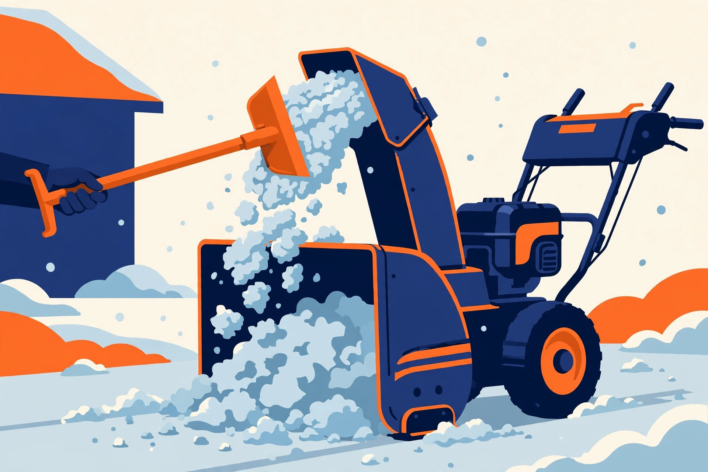

Wet snow is the load that humbles snowblowers. It is dense, it sticks to everything it touches, and it packs into the discharge chute until a machine that was throwing happily starts dribbling, bogging, and finally stalling. The fix is rarely more power. It is technique: when you go out, how much snow you ask the machine to swallow at once, how steady you keep the flow, and what you do — safely — when a clog happens anyway.
Why wet snow clogs: the stickiness problem
Partially melted snow compacts readily and adheres to surfaces, including the inside of your chute and auger housing. Each pass deposits a little more, the opening narrows, the snow behind it has nowhere to go, and the clog builds from the walls inward. Snow that has been treated with de-icing material is especially sticky. Understanding that sequence matters, because every technique below attacks one link in it: reduce adhesion, reduce the volume per pass, or keep the stream moving so deposits never get a foothold.
Step one: go early, and go more than once
The single most effective anti-clog decision happens before the machine starts. Clear snow early, while temperatures are lower and the snow is lighter and drier, before sun and traffic work on it. In a big storm, that means clearing in increments during the storm rather than waiting for the final total — experienced guidance commonly suggests getting out after a few inches have accumulated and repeating, instead of asking the machine to swallow the whole storm at once. Do not walk or drive on the snow first if you can avoid it: compacted snow is harder for the machine to lift and far more likely to pack and stick.
Step two: treat the chute before the first pass
A slick chute sheds wet snow instead of collecting it. Before the storm — and this only works on a dry machine — coat the inside of the discharge chute and the impeller area with a non-stick treatment. The options owners use range from non-stick cooking spray to silicone or Teflon-type spray lubricants and ski or automotive waxes. Sprays are quick and easy to reapply; waxes take more effort to put on but tend to last longer between applications. Whichever you choose, reapply when throwing distance starts to fade mid-job, with the engine off. This is a small ritual with an outsized payoff: it is the difference between snow sliding through and snow setting up shop.
The clearing procedure: partial width, steady pace
- Plan the pattern before you start. Position the discharge chute toward where the snow should land, and work so you are not throwing snow onto ground you still have to clear. On a driveway, starting near the centre and widening outward keeps the discharge pointed at uncleared edges for as little time as possible.
- Make the first pass at a width the machine handles comfortably. This pass opens the lane; it does not have to be perfect.
- On every pass after the first, take only part of the housing width — about half is the standard guidance — overlapping the cleared lane. The auger is then chewing a manageable ribbon of snow instead of a full-width wall of it.
- Keep a slow, steady forward pace, and keep moving. A pace that is too aggressive overloads the auger; dithering and stopping lets wet snow settle and pack in the chute. A continuous, moderate flow is what keeps the stream throwing.
- Listen to the engine. A healthy load sounds steady. If the engine note drops and the throw weakens, you are feeding too much: narrow the bite or slow the pace before it stalls, not after.
- At the end of the driveway, where plows leave a dense, heavy ridge, expect the worst clogging of the job. Take that bank in narrow slices, and never drive the machine straight into it as if it were a plow.
- When you finish, run the auger briefly in clear space to empty the housing, let the engine idle down for a short cool-down before switching off, and brush the packed snow out of the housing and chute so it does not freeze in place for next time.
What success looks like: a continuous, arcing stream of snow for the whole job, an engine note that stays steady instead of sagging on each pass, and a chute that is still clear when you put the machine away — not one you have to chip out.

If it clogs anyway: the only safe way to clear it
It will happen eventually, and this is where injuries happen — hand contact with the impeller inside the discharge chute is the most common cause of snowblower injury, and it can happen even with the engine off, because an impeller jammed against packed snow can hold residual tension that releases suddenly when the clog shifts. So the procedure is absolute, every time:
- Shut the engine off.
- Wait at least ten seconds to be certain the impeller blades have stopped rotating.
- Disconnect the spark plug wire for any deeper clearing or inspection.
- Clear the chute and auger housing with the clean-out tool that clips to the machine, or a stick or broom handle. Never your hands — not to scoop, not to poke, not just for a second.
- Before restarting, ask why it clogged. Full-width bites, a dry untreated chute, and snow left too deep are technique problems you can fix on the next pass.
Clog, shear pin, or belt? A quick diagnosis
| Symptom | Likely cause | Response |
|---|---|---|
| Throw weakens gradually, then stops; housing packed with snow | Chute clog from sticky snow | Safe clear-out above; narrow your passes; re-treat the chute |
| Auger stops suddenly after a bang or a strike | Broken shear pin | Engine off, plug wire off, clear the object, replace the pin with the correct part |
| Auger slows or stops under load, engine still strong; squeal or hot-rubber smell | Slipping or damaged auger belt | Stop and inspect the belt per your manual; adjust or replace |
| Engine bogs on every pass, no strike, chute clear | Overfeeding for conditions | Half-width passes, steadier pace, clear in storm increments |
The value of the table is restraint: not every stoppage is a clog, and clearing a chute will not fix a broken pin or a glazed belt. Match the symptom to the cause before you restart, and a wet-snow day stops being a cycle of clog, clear, clog.
A note on single-stage machines
On a single-stage machine the auger both collects the snow and throws it, which is why these machines are happiest in shallower, lighter snowfalls. In heavy wet snow, the partial-width and early-and-often rules matter even more, and the honest limit arrives sooner: if a single-stage machine is clogging repeatedly despite good technique, the remaining move is timing — clearing smaller accumulations more often — rather than forcing a pace the design cannot sustain. A two-stage machine, with a separate impeller doing the throwing, has more headroom in deep, heavy snow, but it clogs by exactly the same stickiness mechanism when it is overfed.
FAQ
Does non-stick spray really help, or is it a gimmick? It addresses the actual mechanism — adhesion to the chute walls — and it is widely recommended for exactly this problem. Apply it to a dry chute before the storm; spraying a chute that is already wet and packed does far less.
Faster or slower — which prevents stalls? Neither extreme. Crawling lets snow pack and settle; charging overloads the auger. The target is a steady, continuous pace matched to a partial-width bite, adjusted by ear: if the engine sags, ease off before it stalls.
The chute clogged and the engine is off. Safe to reach in now? No. A stopped impeller can still be under tension against the packed snow and can snap forward when the clog moves. Engine off, wait, plug wire off for inspection, and the clean-out tool — every time.